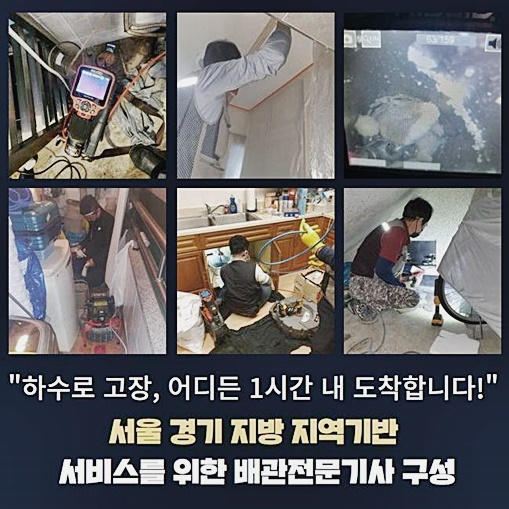
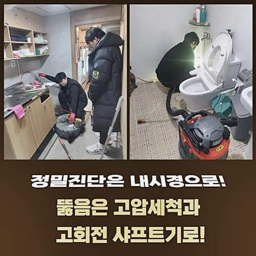
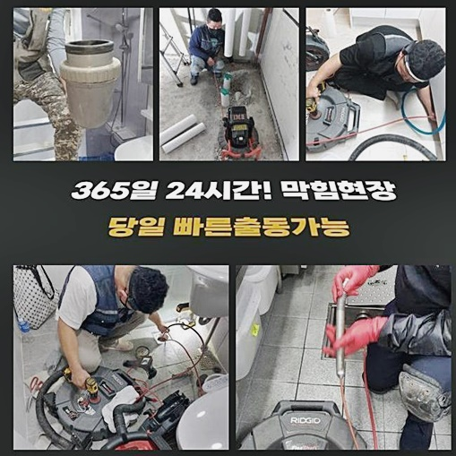
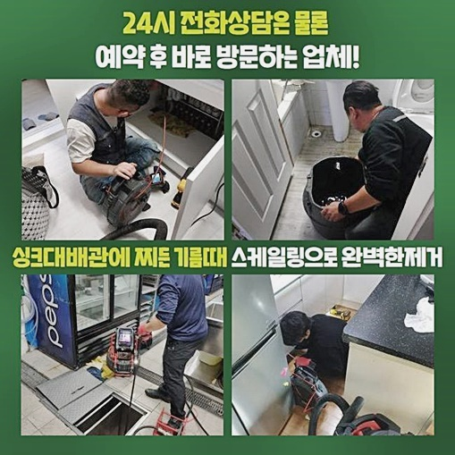
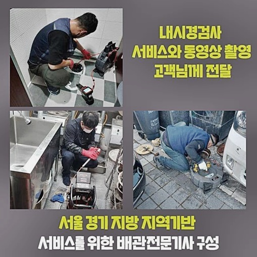
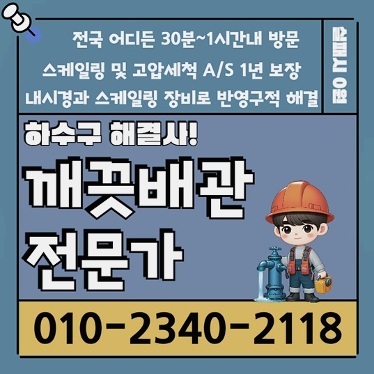

🏠 성남 신흥동오수관막힘 위례동 하수구뚫는업체 배관뚫는업체
성남 싱크대막힘 전문 시공 후기

📋 작업 개요
- 위치: 성남
- 서비스 유형: 싱크대막힘, 하수구막힘, 배관막힘, 역류해결, 뚫는업체, 배관청소, 고압세척
- 작업 일시: 2024. 8. 3. 16:33
- 업체명: 하수구수사대 (010-5615-2118)
🔍 문제 상황
성남 신흥동오수관막힘 위례동 하수구뚫는업체 배관뚫는업체
내가 생활하는 주거지여도 예상치못하게 생겨나는 피해들이 있답니다
예상하셨을수도 있겠지만 이에 해당하는 피해들은 배수장애죠
배관에 문제가 생겼을땐 온통 악취자체로 환경에 악영향을 미치고 안락해야될 공간들이 불현듯 비보건적인 환경들로 바뀝니다
막히게되어 물들이 안빠지고 오염물들이 솟아오르는 상태가 펼쳐진다면 내부는 위생적으로 좋지못한 영향을 미치겠죠?
이런 상황들속 깔끔하게 시정해낼 수 있는 대응책들을 지원하는게 배수장애를 시정하는 업체들의 1순위 목표입니다
금일엔 고객의 거주지서 행해진 철두철미한 절차들을 상세히 일러드리고자 하는데요
설명해주시기를 발코니쪽에 자리하고있는 세탁기의 배수구에서 물들이 배출되지를 못한다고 저희께 전화하셨습니다
배수문제를 주업무로하는 저희는 즉각 요구되는 도구들인 샤프트도구 흡입기 내시경장비를 구비하여 문제의 공간으로 찾아뵈었어요
도착해놓고보니 냄새와 더불어 오염원이 솟구치는 것을 알게 되었죠
바로 오수들을 모으고 통수를 시도하기로 했는데요
이 단계에서 간단한 세제 오염물이 아닌, 하수관로에 위치해있던 이물들이 역류되면서 안좋은 악취까지 생겨나게했어요

🔎 원인 분석
💡 전문가 진단: 정밀 진단 장비를 사용하여 슬러지의 고착 여부를 판명하고 타격/세척 작업을 실시했습니다.
종종 싱크대라인과 베란다부분의 관로들이 연결되어진 구조가 있어서 이것들이 이어져있는지 확인해주는 진단절차들을 수행하는데요
지금부턴 문제의 원인들을 인지하고자 고객에게 며칠전 막힘징후가 있다거나 역류문제들이 있었는지 물어보았죠
그러더니 최근들어 배수구쪽을 청소하려고 집에 있던 세제들과 발포용품을 사용했다 설명하셨죠
때문에 씽크대쪽과 이어져있는 하수도가 주범일거란 가능성들이 높겠다는 판단을 했는데요
저희들이 방문했던 곳의 증상들을 고쳐낼 생각을 하여 연유들을 상세히 파악하는것이 중요해요
그래서 내시경장비를 이용해서 자리를 잡게되어버린 배수구를 진단해주기위한 셋팅까지 완료하였는데요
안쪽이 정확히 안보이게 된다면 석션장치를 사용한 뒤 부유하는 하수들을 제거시킵니다
석션장비를 운용해서 최초의 수리를 수행했습니다
세척할때 찌꺼기들과 부유물이 제거되었으나 특정된 그 기저는 확실치 않았어요
사용했던 석션장치의 가용으론 풀어내지 못하는 사례들이 다수 존재하므로 다음으로 내시경장치로 청소된 관로를 확인할 필요가 있어요
이물을 이곳저곳 보니 섬유조각과 유사한 잔해물이였는데요
이것은 세탁기배관에서 배출되어진 작은 오염원일 가능성들이 농후했습니다

🔧 작업 과정
우선적으로 해당 이물을 빼내준 뒤 이젠 심부까지 이물제거에 심혈을 기울였습니다
이 시점에서 깊숙한 지점의 문제를 풀어내고자 완벽한 수리를 수행할때 없어선 안될 장비들을 이용하는데요
내시경장치를 쓰는 까닭은 깊은부분의 문제를 구석까지 살피고 완벽하게 작업을 해주기 위해서죠
석션장치로 흡입을 실시하고 앞쪽에 달려있는 내시경장비로 구석구석 이곳저곳 들여다보았는데요
벽측까지 진단하며 문제들이 모여있던 부위를 확인해보았는데요
이것과같이 막히게되어버린 사안은 예상치못하게 야기되고 시정도 간단그러나은 않은데요
그럼에도 불구하고 전문적 접근과 경험들을 겸비한 전문진의 해결방식으로 피해를 신속히 완화시키는것이 가능하죠
막히게되어버렸을 때 까닭들과 위치들을 찾아나서기위하여 내시경장비를 깊은 지점까지 투입해보았습니다
사용한 물의 경우 복잡한 라인으로 나가는데 배관들은 짧기도 하나 수십미터까지 뻗어있는 경우도 있습니다
그래서 외부적인 요소만은 파악이 불가한 배관 내측을 내시경장비로 이곳저곳 관찰했어요
내측의 상황까지 관찰하였더니 안에는 이물과 미세한 잔재뭉치들이 내측에서 뒤엉킨 상황이였는데요
이에 해당하는 개체는 수용성이 아니라 빨리 흡착해버려 돌의 모습으로 굳을수 있어요
상황을 보고 이용되는 기기가 다른데 가령 이물질의 크기가 클 땐 갈고리부분의 장비들로 배출해주고 석션으로 잔해도 흡입시켜요
심하다면 이물들이 기름성분과 이곳저곳에 뭉친형태로 자리잡았다면 이것들을 조각내는 샤프트가 있어야합니다
오염원들과 영키게되면서 딱딱하게 된 슬러지들과 점성이 가득한 개체를 샤프트장치로 탈락시켜주면서 청소시켰어요
샤프트기기는 하수라인에서 돌아가며 잔재를 잘게 조각내는 역할들을 수행해요
저희전문진이 찾아뵈었던 곳의 모든 고착물이 제거되고 내시경 내시경으로 반복적인 검사들을 이행해 세척의 현 상황을 확인한 다음 배수시키는 테스트까지 수행했는데요
마무리전 존재하는 잔여 고착물이 남아있지않게 석션장치로 배출시키며 세세하게 작업하여 깨끗하게 만들어주었어요
이러한 문제들을 방지하고자 하면 주기적 진단들과 관리가 동반되어야해요
싱크대부분과 접촉된 하수도에서 음식잔해가 군데군데 자리를 잡게되어 솟아오르는 경우도 목격한 적이 있었죠


✅ 작업 완료
막혀버리는 사태가 야기되었을 시 침착함을 유지하시고 저희의 전문인에게 문의해보세요
저희전문인의 청소의 경우 간단한 과정뿐만 아니라 주거지의 위생까지 지켜주는 절차입니다
저희들은 증상들을 꼼꼼히 시정하고 청결한 내구성을 이어갈 수 있게 심혈을 기울이겠습니다
혹시라도 이에 해당하는 증상들에 노출되었을때 신속히 저희의 전문인들에게 도움을 청해보시기 바라요
저희들은 의뢰자의 위생환경들을 이어가시게끔 노력합니다




⚠️ 주방 싱크대 배관 막힘 예방 수칙
- ✅ 기름기가 묻은 식기나 프라이팬은 설거지 전 키친타올로 반드시 기름때를 닦아내세요.
- ✅ 주기적으로 싱크대 개수대에 뜨거운 물을 가득 받아 한 번에 내려 배관 내부 기름을 씻어내세요.
- ✅ 배수구 거름망을 미세한 필터로 사용하시고 음식물 찌꺼기가 틈으로 새어 들지 않게 관리하세요.
- ✅ 베이킹소다와 식초를 뜨거운 물과 함께 일주일에 한 번씩 부어주면 배관 살균과 막힘 예방에 좋습니다.
💡 핵심 정리
- 확실한 장비 작업(내시경 점검 및 샤프트 스케일링)으로 원인을 뿌리 뽑습니다.
- 작업 후 1년 이내에 동일한 부위 재발 시 100% 무상 A/S 서비스를 보장합니다.
- 서울 · 경기 · 인천 전 지역에 24시간 언제든 긴급 출동할 수 있도록 항시 대기 중입니다.
❓ 자주 묻는 질문 (FAQ)
🚨 성남 싱크대막힘 문제로 고민이신가요?
정확한 원인 진단과 확실한 시공으로 재발 없는 해결을 약속드립니다.
24시간 긴급 출동 | 서울 · 경기 · 인천 전지역 | 1년 내 재발 시 무상 A/S